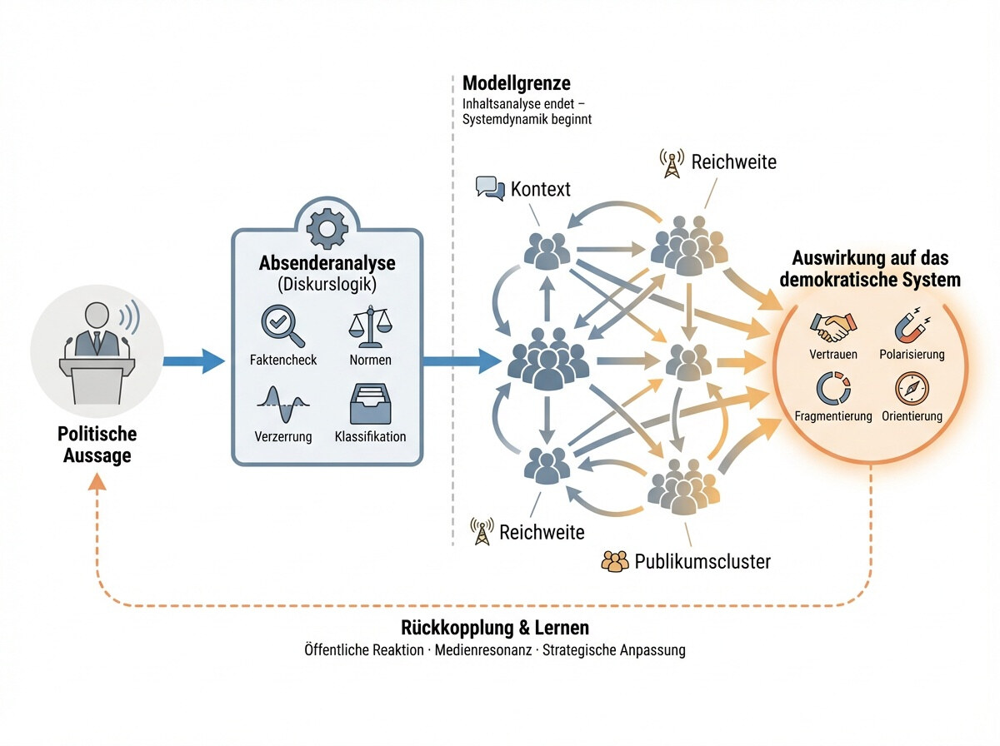

In den politischen Debatten erleben wir derzeit ein paradoxes Phänomen: Noch nie standen so viele Informationen, Daten, Studien und Faktenchecks zur Verfügung - und doch scheint es immer schwieriger, Menschen zu erreichen, zu überzeugen oder auch nur im Gespräch zu halten.
Gerade im Umgang mit polarisierenden, häufig rechten Narrativen entsteht bei vielen Demokrat:innen ein Gefühl von Ohnmacht. Man argumentiert sachlich, belegt Aussagen, verweist auf Quellen - und stößt dennoch auf Ablehnung, Abwehr oder Gleichgültigkeit. Nicht selten eskalieren Gespräche, statt sich zu klären. Vertrauen geht verloren, Fronten verhärten sich.
Die naheliegende Reaktion ist verständlich: Wenn Fakten nicht greifen, dann brauchen wir noch mehr Fakten. Noch gründlichere Analysen. Noch präzisere Bewertungen von Aussagen, Parteien, Politiker:innen und Medien.
Doch genau hier lohnt es sich, innezuhalten.
Denn was, wenn das eigentliche Problem nicht ein Mangel an Information ist? Was, wenn wir mit Fakten auf etwas reagieren, das längst auf einer anderen Ebene operiert?
Dieser Text folgt der These, dass viele gegenwärtige Demokratiedebatten aneinander vorbeilaufen, weil sie Wahrheit und Wirkung verwechseln. Während auf der Oberfläche über Richtigkeit gestritten wird, laufen im Hintergrund psychologische, mediale und systemische Prozesse ab, die darüber entscheiden, wie Aussagen aufgenommen, verstärkt und weitergetragen werden - und was sie im demokratischen System anrichten.
Es geht dabei nicht um die Frage, ob Fakten unwichtig geworden sind. Im Gegenteil: Sie sind unverzichtbar.
Aber sie sind nur der Anfang.
Um zu verstehen, warum faktenbasierte Kommunikation immer häufiger ins Leere läuft, müssen wir drei Ebenen zusammendenken:
die psychologische Ebene von Identität, Emotion und kognitiver Dissonanz,
die mediale Ebene von Aufmerksamkeit, Zuspitzung und Wiederholung,
und die systemische Ebene von Wirkung, Rückkopplung und Lernfähigkeit.
Erst wenn wir diese Ebenen verbinden, wird sichtbar, warum demokratische Kommunikation heute weniger an mangelnder Wahrheit scheitert als an fehlender Wirkungsverantwortung.
Dieser Artikel arbeitet diese Zusammenhänge Schritt für Schritt auf. Er beginnt bei der vermeintlichen „Faktenresistenz“, führt über Diskurslogiken und Analysemodelle und endet bei der Frage, wie Wirkung in komplexen Öffentlichkeiten überhaupt gesteuert werden kann - ohne Zensur, ohne Gesinnungsprüfung, aber mit klarer Verantwortung für demokratische Stabilität.
Faktenresistenz - ein falscher Begriff?
Der Begriff „Faktenresistenz“ hat sich in den letzten Jahren fest etabliert. Er beschreibt das Phänomen, dass Menschen - häufig im rechten oder stark polarisierten Spektrum - selbst gut belegte Informationen zurückweisen, relativieren oder aggressiv abwehren. Studien, Statistiken, Gerichtsurteile oder historische Fakten scheinen keine Überzeugungskraft mehr zu entfalten.
Die naheliegende Deutung lautet: Diese Menschen wollen die Wahrheit nicht sehen. Sie seien ideologisch verbohrt, irrational oder schlicht uninformiert.
Doch diese Erklärung greift zu kurz - und sie ist gefährlich. Denn sie verkennt, was hier tatsächlich passiert.
Faktenresistenz ist selten ein Erkenntnisproblem
In den meisten Fällen scheitert Kommunikation nicht daran, dass Informationen unverständlich oder unbekannt wären. Sie scheitert daran, dass Informationen eine psychologische Funktion erfüllen oder bedrohen.
Menschen sind keine neutralen Informationsverarbeiter. Sie nutzen Informationen, um:
ihr Weltbild zu stabilisieren,
ihre soziale Zugehörigkeit zu sichern,
Kontrolle und Orientierung zu behalten.
Wenn Fakten diese Funktionen gefährden, werden sie nicht als Erkenntnisangebot wahrgenommen, sondern als Angriff.
Kognitive Dissonanz: Wenn Wahrheit Stress erzeugt
Ein zentraler Mechanismus ist die sogenannte kognitive Dissonanz. Sie entsteht, wenn neue Informationen im Widerspruch zu bestehenden Überzeugungen, Identitäten oder Loyalitäten stehen. Dieser Widerspruch erzeugt psychischen Stress - und das Gehirn sucht nach Entlastung.
Wichtig dabei ist: Das Gehirn sucht nicht nach Wahrheit, sondern nach Spannungsreduktion.
Typische Strategien sind:
die Abwertung der Quelle („Die sind gekauft“),
die Relativierung der Information („Man weiß ja gar nichts mehr“),
der Ebenenwechsel („Das ist auch nur Meinung“),
die Ablenkung („Aber was ist mit…?“),
oder die Flucht in Überforderung („Das ist mir alles zu kompliziert“).
All das wirkt nach außen wie Faktenresistenz. Tatsächlich ist es Selbstschutz.
Identität schlägt Information
Besonders wirksam wird dieser Mechanismus dort, wo politische Narrative Teil der eigenen Identität geworden sind. In solchen Fällen sind Aussagen keine überprüfbaren Behauptungen mehr, sondern Zugehörigkeitssignale.
Zu sagen „Das stimmt nicht“ bedeutet dann nicht:
„Du hast dich geirrt.“
Sondern:
„Du gehörst nicht dazu.“
Oder noch schärfer:
„Dein Weltbild ist falsch.“
Je stärker Identität betroffen ist, desto unwahrscheinlicher wird eine faktenbasierte Korrektur. Fakten werden nicht gehört, sondern abgewehrt.
Warum mehr Fakten alles schlimmer machen können
Hier liegt eine bittere Ironie: Je verzweifelter versucht wird, mit Fakten gegenzuhalten, desto stärker kann sich die Abwehr verfestigen.
Mehr Quellen → mehr Bedrohung
Mehr Belege → mehr Verteidigung
Mehr Korrekturen → mehr Eskalation
Was als Aufklärung gemeint ist, wird als Angriff erlebt. Das Ergebnis ist nicht Annäherung, sondern Polarisierung.
An diesem Punkt beginnt sich etwas Entscheidendes zu verschieben: Die Debatte verlässt die Ebene der Wahrheit und wird zur Macht-, Identitäts- und Resonanzfrage.
Der Übergang zur nächsten Ebene
Wenn Fakten nicht mehr überzeugen, liegt das nicht daran, dass sie falsch oder überflüssig wären. Es liegt daran, dass sie nicht dort ansetzen, wo Wirkung entsteht.
Um zu verstehen, warum faktenbasierte Kommunikation trotzdem unverzichtbar ist - und warum sie allein nicht reicht -, müssen wir einen Schritt weitergehen: weg von der individuellen Psyche, hin zur Logik öffentlicher Kommunikation.
Denn selbst dort, wo Menschen prinzipiell offen sind, verändern Medienlogiken, Plattformmechanismen und Diskursdynamiken, wie Aussagen wirken, unabhängig von ihrer inhaltlichen Qualität.
Identität, Zugehörigkeit und Diskurslogik
Warum politische Kommunikation nicht mehr linear funktioniert
Eben habe ich aufgezeigt, warum Fakten an individuellen Schutzmechanismen abprallen können. Nun stellt sich die nächste Frage: Warum scheitern faktenbasierte Argumente auch dort, wo Menschen eigentlich offen, interessiert und diskursbereit sind?
Die Antwort liegt nicht (nur) in der Psychologie einzelner Personen, sondern in der Logik öffentlicher Kommunikation selbst.
Vom Gespräch zur Bühne
Demokratische Auseinandersetzung wurde lange als Gespräch gedacht: Zwei Seiten tauschen Argumente aus, prüfen sie, korrigieren sich, lernen dazu.
Dieses Modell setzt stillschweigend voraus:
überschaubare Öffentlichkeit
geteilte Bezugspunkte
zeitliche Entschleunigung
begrenzte Reichweite
Diese Voraussetzungen existieren kaum noch.
Politische Kommunikation findet heute überwiegend auf Bühnen statt - in Talkshows, Feeds, Kommentarspalten, Livestreams und Kurzformaten. Dort wird nicht primär gesprochen, um zu verstehen, sondern um gesehen, gehört und zugeordnet zu werden.
Aussagen als Signale
In solchen Räumen verändern Aussagen ihre Funktion. Sie sind nicht mehr nur Information, sondern Signale:
Wer bin ich?
Zu wem gehöre ich?
Auf welcher Seite stehe ich?
Eine Aussage wird damit weniger danach bewertet, ob sie richtig oder falsch ist, sondern danach, für wen sie anschlussfähig ist.
Das gilt nicht nur für extreme Ränder, sondern für den gesamten politischen Raum.
Wir-gegen-sie als Grundmuster
Öffentliche Diskurse tendieren unter diesen Bedingungen zur Vereinfachung. Komplexe Sachverhalte werden entlang binärer Linien sortiert:
wir / die anderen
vernünftig / ideologisch
wach / verblendet
gut / böse
Solche Unterscheidungen sind emotional wirksam, aber diskursiv destruktiv.
Denn sie ersetzen Argumente durch Lagerlogik. Einmal verortet, wird nicht mehr geprüft, sondern verteidigt.
Medien- und Plattformlogiken verstärken diese Dynamik
Hinzu kommen strukturelle Verstärker:
Zuspitzung schlägt Differenzierung
Wiederholung schlägt Einordnung
Empörung schlägt Erklärung
Reichweite schlägt Relevanz
Das ist kein moralisches Versagen einzelner Akteur:innen, sondern eine systemische Logik von Aufmerksamkeit.
Aussagen, die polarisieren, werden häufiger gezeigt. Aussagen, die verunsichern, werden stärker kommentiert. Aussagen, die Angst oder Wut erzeugen, bleiben länger im Gedächtnis.
So entsteht eine paradoxe Situation:
Selbst sachliche, gut gemeinte Aussagen können in einem polarisierenden Umfeld polarisierend wirken.
Warum Wahrheit allein keine Steuerungsgröße mehr ist
In dieser Umgebung verliert Wahrheit ihre Rolle als primäre Steuerungsgröße. Nicht, weil sie unwichtig geworden wäre, sondern weil sie nicht mehr entscheidet, was sichtbar, geteilt oder erinnert wird.
Entscheidend wird stattdessen:
Resonanz
Anschlussfähigkeit
Wiederholbarkeit
emotionale Aktivierung
Das erklärt, warum faktenbasierte Kommunikation meistens untergeht, während vereinfachte oder verzerrte Narrative dominieren - selbst dann, wenn viele Menschen sie innerlich ablehnen.
Der systemische Perspektivwechsel
An diesem Punkt verschiebt sich der Blick zwangsläufig:
Die Frage ist nicht mehr nur:
Ist diese Aussage korrekt?
Sondern:
Was macht diese Aussage im öffentlichen Raum?
Welche Dynamiken löst sie aus? Welche Lager aktiviert sie? Welche Deutungsmuster verstärkt sie?
Und vor allem:
Welche Wirkung entfaltet sie - unabhängig von ihrer Absicht?
Damit betreten wir eine neue Analyseebene. Eine Ebene, auf der es nicht mehr genügt, Aussagen zu prüfen, sondern notwendig wird, Wirkungen zu verstehen.
Vorbereitung auf das Modell
Genau hier setzt das Modell an, das später im Text eingeführt wird. Es trennt nicht Wahrheit von Lüge, sondern Inhalt von Wirkung.
Es zeigt:
warum Inhaltsanalysen unverzichtbar sind,
warum sie aber allein nicht ausreichen,
und warum demokratische Stabilität davon abhängt, beide Ebenen systematisch zusammenzudenken.
Der Faktenreflex
Warum wir auf ein Wirkungsproblem mit Analyse reagieren
Wenn politische Debatten eskalieren, wenn Narrative sich verselbstständigen und Vertrauen schwindet, reagiert die demokratische Öffentlichkeit meist reflexhaft - und durchaus rational: mit Analyse.
Man prüft Aussagen. Man vergleicht Zahlen. Man erstellt Rankings, Scores, Übersichten. Man bewertet Parteien, Politiker:innen, Medien und einzelne Diskursbeiträge nach Faktentreue, Verzerrung oder normativen Maßstäben.
Dieser Reflex ist verständlich. Er ist sogar notwendig.
Denn in einer Zeit, in der Wahrheit relativiert und Vertrauen systematisch angegriffen wird, ist Transparenz über Aussagenqualität ein demokratisches Grundbedürfnis.
Analyse als Schutzreaktion
Der Faktenreflex erfüllt mehrere wichtige Funktionen:
Er schafft Orientierung in unübersichtlichen Debatten.
Er stabilisiert gemeinsame Maßstäbe.
Er entzieht gezielten Falschbehauptungen den Anspruch auf Gleichwertigkeit.
Er signalisiert: Nicht alles ist Meinung.
Kurz gesagt: Analyse schützt den Wahrheitsraum der Demokratie.
Gerade deshalb ist es kein Zufall, dass Faktenchecks, Diskursanalysen und Bewertungsmodelle in den letzten Jahren massiv ausgebaut wurden. Sie sind eine Antwort auf reale Angriffe auf Öffentlichkeit, Wissenschaft und Rechtsstaat.
Wenn Analyse zur Endstation wird
Problematisch wird der Faktenreflex jedoch dort, wo Analyse zur Endstation erklärt wird.
Denn implizit steckt in vielen dieser Bemühungen eine Annahme:
Wenn wir nur sauber genug analysieren, dann wird sich das Problem von selbst lösen.
Diese Annahme ist verständlich - aber sie ist falsch.
Nicht, weil Analyse schlecht wäre. Sondern weil sie nicht dort ansetzt, wo die entscheidenden Effekte entstehen.
Analyse beantwortet eine andere Frage als Wirkung
Analyse klärt:
Was wurde gesagt?
Ist es korrekt?
Ist es verzerrt?
Verstößt es gegen normative Standards?
Das sind essentielle Fragen. Aber sie sind nicht identisch mit der Frage:
Was richtet diese Aussage in der Gesellschaft an?
Zwischen diesen beiden Fragen liegt eine systemische Lücke.
Denn selbst eine korrekt analysierte, sauber eingeordnete Aussage
kann millionenfach geteilt werden,
in zugespitzte Kontexte geraten,
emotional aufgeladen werden,
und ganz andere Effekte entfalten, als ihre Analyse vermuten lässt.
Die stille Verschiebung: Von Erkenntnis zu Symbolik
Hinzu kommt ein weiterer Effekt: Analyse selbst kann Teil der Diskursdynamik werden.
Bewertungen werden zitiert, verkürzt, instrumentalisiert. Scores werden zu Etiketten. Einordnungen zu Waffen im Lagerkampf.
Was ursprünglich zur Aufklärung gedacht war, wird im öffentlichen Raum schnell zu Symbolik:
„Die sind als problematisch eingestuft.“
„Die stehen schlecht da.“
„Die werden doch eh immer bewertet.“
Damit verschiebt sich die Funktion von Analyse: von Erkenntnis → zu Markierung.
Und genau hier entsteht ein paradoxes Ergebnis:
Mehr Analyse führt nicht automatisch zu mehr Orientierung, sondern kann - unter bestimmten Bedingungen - sogar Polarisierung verstärken.
Die unsichtbare Grenze der Analyse
An diesem Punkt stoßen Analysemodelle nicht aus mangelnder Qualität, sondern aus methodischer Ehrlichkeit an ihre Grenze.
Denn Analyse bleibt - zwangsläufig - auf der Ebene der Aussage. Sie bewertet Inhalte, nicht ihre gesellschaftliche Laufbahn.
Was danach passiert,
wie Aussagen zirkulieren,
wie sie verstärkt werden,
wie sie auf unterschiedliche Gruppen wirken,
und welche Dynamiken sie auslösen,
liegt außerhalb klassischer Analyse.
Nicht, weil es unwichtig wäre - sondern weil es eine andere Ebene ist.
Der entscheidende Perspektivwechsel
Hier beginnt sich die zentrale Frage zu verschieben:
Nicht mehr nur:
Ist diese Aussage richtig oder falsch?
Sondern:
Was passiert mit dieser Aussage, nachdem sie gesagt wurde?
Wer diese zweite Frage nicht stellt, versucht ein Wirkungsproblem mit Erkenntnisinstrumenten zu lösen.
Das ist, als würde man Emissionen allein durch chemische Analyse messen, ohne Ausstoß, Verbreitung und Anreicherung zu berücksichtigen.
An genau dieser Stelle braucht es einen Perspektivwechsel - nicht weg von Analyse, sondern über sie hinaus.
Warum Inhaltsanalyse unverzichtbar bleibt
Die demokratische Funktion von Transparenz
An dem Punkt, an dem die Grenzen reiner Faktenarbeit sichtbar werden, liegt eine gefährliche Versuchung nahe: Die Schlussfolgerung, Analyse und Faktenchecks seien wirkungslos oder sogar Teil des Problems. Diese Schlussfolgerung wäre jedoch falsch. Gerade weil öffentliche Kommunikation zunehmend emotionalisiert, polarisiert und beschleunigt ist, bleibt Inhaltsanalyse eine unverzichtbare demokratische Infrastruktur. Nicht als Lösung für alle Probleme, sondern als Voraussetzung dafür, sie überhaupt sinnvoll zu bearbeiten.
Inhaltsanalyse erfüllt eine grundlegende Ordnungsfunktion. Sie schafft Transparenz darüber, was tatsächlich gesagt wird, trennt überprüfbare Aussagen von Meinungen, identifiziert Verzerrungen, Auslassungen oder Delegitimierungsstrategien und macht sichtbar, wenn demokratische Normen systematisch unterlaufen werden. Ohne diese Arbeit gäbe es keinen gemeinsamen Referenzrahmen mehr, auf den sich Öffentlichkeit, Journalismus, Wissenschaft oder politische Bildung beziehen könnten.
Entscheidend ist dabei, dass Inhaltsanalyse keine Gesinnungen bewertet, sondern Aussagen. Sie fragt nicht, was jemand denkt oder fühlen sollte, sondern was konkret behauptet wird und wie diese Behauptung einzuordnen ist. Gerade diese Begrenzung macht sie demokratietheoretisch legitim. Sie schützt vor Willkür, Moralisierung und Machtmissbrauch, weil ihre Kriterien transparent, nachvollziehbar und überprüfbar sein müssen.
In einer fragmentierten Öffentlichkeit übernimmt Inhaltsanalyse zudem eine stabilisierende Funktion. Sie verhindert, dass jede Behauptung denselben Status erhält, nur weil sie laut oder häufig genug wiederholt wird. Sie setzt der Relativierung von Wahrheit eine überprüfbare Struktur entgegen, ohne Meinungsfreiheit einzuschränken. Damit verteidigt sie nicht einzelne Positionen, sondern die Idee, dass öffentliche Auseinandersetzung an überprüfbare Maßstäbe gebunden bleibt.
Gleichzeitig ist es wichtig, die Reichweite dessen, was Inhaltsanalyse leisten kann, realistisch einzuschätzen. Sie kann Orientierung über die Qualität von Aussagen bieten, aber sie kann nicht kontrollieren, wie diese Aussagen im öffentlichen Raum weiterverarbeitet werden. Sie kann Risiken sichtbar machen, aber sie kann keine Wirkung verhindern. Sie kann erklären, warum eine Aussage problematisch ist, aber nicht, wie stark sie polarisiert, emotionalisiert oder Vertrauen untergräbt, sobald sie auf unterschiedliche Kontexte und Publika trifft.
Genau hier liegt kein Versagen der Analyse, sondern ihre methodische Grenze. Inhaltsanalyse ist darauf ausgelegt, den Wahrheits- und Normenraum zu stabilisieren, nicht darauf, gesellschaftliche Dynamiken zu steuern. Wer ihr dennoch diese Steuerungsfunktion zuschreibt, überfordert sie strukturell und öffnet zugleich die Tür für falsche Erwartungen und Enttäuschungen. Analyse wird dann entweder für wirkungslos erklärt oder zum Sündenbock gemacht, obwohl sie genau das leistet, wofür sie konzipiert ist.
Richtig verstanden bildet Inhaltsanalyse deshalb den notwendigen ersten Schritt in einer Kette demokratischer Verantwortlichkeit. Sie definiert, was als problematisch gilt, sie schafft Vergleichbarkeit und sie ermöglicht es überhaupt erst, über Wirkung zu sprechen, ohne in bloße Macht- oder Aufmerksamkeitslogiken abzurutschen. Ohne eine vorgelagerte, saubere Analyseebene wäre jede spätere Wirkungsbewertung willkürlich, politisch angreifbar und demokratietheoretisch fragwürdig.
Von der Analyse zur Wirkung

Was die Grafik sichtbar macht
An dieser Stelle lohnt sich ein Blick auf das Modell. Es verdichtet die bisherigen Argumente in einer klaren Struktur und macht sichtbar, wo genau der Perspektivwechsel stattfindet, der für das Verständnis moderner demokratischer Kommunikation entscheidend ist.
Ganz links steht die politische Aussage. Sie ist der Ausgangspunkt, aber noch kein Problem an sich. Erst durch Einordnung, Weiterverarbeitung und Verstärkung gewinnt sie gesellschaftliche Relevanz. Direkt an diese Aussage schließt die Absenderanalyse an. In diesem Block werden Inhalte geprüft, eingeordnet und klassifiziert. Faktencheck, Normenprüfung, Verzerrungsanalyse und Klassifikation schaffen Transparenz über die Qualität des Gesagten. Hier geht es um die Frage, was gesagt wurde, wie es einzuordnen ist und wo Risiken liegen. Diese Analyse ist bewusst klar begrenzt. Sie bewertet Aussagen, nicht ihre späteren Effekte, und sie trifft keine Aussagen über Motive, Absichten oder Gesinnungen.
Genau an dieser Stelle markiert das Modell eine Grenze. Die gestrichelte Linie steht für einen methodischen Übergang, nicht für einen Bruch. Sie signalisiert: Die Inhaltsanalyse hat ihre Aufgabe erfüllt. Alles, was folgt, ist keine Verlängerung der Analyse, sondern eine neue Ebene. Jenseits dieser Grenze beginnt die Systemdynamik. Hier geht es nicht mehr um Wahrheit im engeren Sinne, sondern um Wirkung.
Rechts der Modellgrenze entfaltet sich die eigentliche Komplexität öffentlicher Kommunikation. Aussagen treffen nicht auf ein homogenes Publikum, sondern auf unterschiedliche Publikumscluster, die jeweils eigene Deutungsrahmen, Emotionen, Erfahrungen und Verwundbarkeiten mitbringen. Dieselbe Aussage kann in verschiedenen Gruppen völlig unterschiedliche Reaktionen auslösen. Diese Reaktionen bleiben nicht isoliert, sondern beeinflussen sich gegenseitig. Zustimmung, Ablehnung, Empörung oder Ironisierung zirkulieren zwischen Gruppen und verstärken sich wechselseitig.
Zentrale Verstärker dieser Dynamik sind Kontext, Reichweite und Wiederholung. Kontext entscheidet darüber, wie eine Aussage gelesen wird, etwa ob sie in einer Krise, im Wahlkampf oder in einer aufgeheizten Debatte erfolgt. Reichweite bestimmt, wie viele Menschen erreicht werden und welche Publika überhaupt in Kontakt mit der Aussage kommen. Wiederholung sorgt dafür, dass bestimmte Deutungen verfestigt werden, selbst wenn der ursprüngliche Inhalt differenzierter war. Diese Faktoren wirken unabhängig von der ursprünglichen Absicht der Sprecher:innen. Sie sind systemische Eigenschaften moderner Öffentlichkeiten.
Aus dem Zusammenspiel dieser Elemente entsteht schließlich die Auswirkung auf das demokratische System. Vertrauen kann gestärkt oder untergraben werden. Polarisierung kann zunehmen oder abnehmen. Öffentliche Debatten können fragmentieren oder Orientierung bieten. Entscheidend ist: Diese Effekte entstehen nicht linear und nicht kontrolliert durch einzelne Akteur:innen. Sie sind das Ergebnis kollektiver Dynamiken, die sich der direkten Steuerung entziehen, aber sehr wohl beobachtbar und analysierbar sind.
Das Modell macht zudem sichtbar, dass Wirkung nicht folgenlos bleibt. Am unteren Rand ist eine Rückkopplung eingezeichnet. Öffentliche Reaktionen, Medienresonanz und strategische Anpassungen wirken zurück auf politische Kommunikation. Politiker:innen lernen aus Wirkung, nicht nur aus Analyse. Sie passen Sprache, Themenwahl und Zuspitzung an das an, was Resonanz erzeugt. Diese Rückkopplung verändert jedoch nicht die Analysemaßstäbe. Sie greift nicht in den Faktencheck oder die Normenprüfung ein, sondern beeinflusst zukünftiges Kommunikationsverhalten.
Gerade diese Trennung ist entscheidend. Die Analyse bleibt der stabile Referenzpunkt für Wahrheit und Normen. Die Wirkungsdynamik erklärt, warum dennoch bestimmte Kommunikationsmuster dominieren und andere untergehen. Erst zusammen ermöglichen beide Ebenen ein realistisches Verständnis demokratischer Öffentlichkeit. Ohne Analyse gäbe es keine Maßstäbe. Ohne Wirkungsanalyse gäbe es keine Erklärung für Eskalation, Polarisierung und Vertrauensverlust.
Damit zeigt die Grafik nicht nur einen Ablauf, sondern eine Verantwortungskette. Sie macht deutlich, dass demokratische Kommunikation nicht allein an der Richtigkeit von Aussagen gemessen werden kann, sondern an ihren systemischen Effekten. Genau an diesem Punkt öffnet sich der Raum für die zentrale Frage: Wenn Wirkung so entsteht, wie können wir dann verantwortungsvoll mit ihr umgehen, ohne Meinungsfreiheit zu beschneiden und ohne in autoritäre Steuerungsfantasien zu verfallen?
Systemwirkungen
Wie Kommunikation demokratische Stabilität verändert
Wenn politische Aussagen die Ebene der Inhaltsanalyse verlassen und in die Systemdynamik eintreten, entfalten sie Wirkungen, die sich nicht mehr auf einzelne Sprecher:innen oder einzelne Rezipient:innen zurückführen lassen. An diesem Punkt geht es nicht mehr um Absicht oder Schuld, sondern um kollektive Effekte. Systemwirkungen entstehen emergent, also aus dem Zusammenspiel vieler Einzelreaktionen, Verstärkungen und Rückkopplungen. Sie sind nicht direkt steuerbar, aber sie sind beobachtbar, beschreibbar und in ihrer Richtung beeinflussbar.
Eine zentrale Systemwirkung ist Vertrauen. Öffentliche Kommunikation kann Vertrauen in demokratische Institutionen, Medien, Wissenschaft und Politik stärken, etwa indem sie Orientierung bietet, Unsicherheiten anerkennt und Widersprüche erklärt. Sie kann Vertrauen aber ebenso untergraben, selbst dann, wenn einzelne Aussagen faktisch korrekt sind. Wiederholte Skandalisierung, permanente Zuspitzung oder das Erzeugen eines Dauerkonflikts vermitteln den Eindruck eines permanenten Ausnahmezustands. Das Ergebnis ist nicht unbedingt Ablehnung, sondern häufig Resignation. Menschen ziehen sich zurück, verlieren das Gefühl, dass politische Prozesse nachvollziehbar oder beeinflussbar sind, und wenden sich ab. Vertrauensverlust ist damit weniger ein plötzlicher Bruch als ein schleichender Prozess, der durch kommunikative Muster stabilisiert wird.
Eng damit verbunden ist die Wirkung der Polarisierung. Polarisierung entsteht nicht allein durch extreme Positionen, sondern durch Kommunikationsformen, die Differenzen zuspitzen und Zwischenräume unsichtbar machen. Wenn Debatten konsequent entlang binärer Linien geführt werden, entsteht der Eindruck, es gebe nur noch klare Lager, die sich unversöhnlich gegenüberstehen. Diese Wahrnehmung kann sich verselbstständigen, auch wenn die Mehrheit der Bevölkerung differenzierter denkt. Polarisierung wirkt dann wie eine sich selbst erfüllende Prophezeiung. Menschen passen ihre Kommunikation an das erwartete Konfliktniveau an, radikale Stimmen werden überproportional sichtbar, moderatere Positionen verlieren an Resonanz.
Eine weitere zentrale Systemwirkung ist Fragmentierung. Fragmentierung beschreibt die Auflösung gemeinsamer Bezugspunkte. Unterschiedliche Gruppen konsumieren unterschiedliche Medien, folgen unterschiedlichen Akteur:innen und bewegen sich in getrennten Diskursräumen. Aussagen zirkulieren innerhalb dieser Räume und werden dort jeweils spezifisch gedeutet, verstärkt oder umgedeutet. Das Problem dabei ist nicht Meinungsvielfalt an sich, sondern der Verlust gemeinsamer Verständigungsgrundlagen. Wenn dieselbe Aussage in verschiedenen Öffentlichkeiten völlig unterschiedliche Bedeutungen annimmt, wird Verständigung zunehmend schwierig. Fragmentierung erschwert nicht nur Konsens, sondern bereits die Einigung darüber, worüber überhaupt gestritten wird.
Demgegenüber steht die Systemwirkung der Orientierung. Orientierung entsteht, wenn Kommunikation Zusammenhänge erklärt, Ambivalenzen zulässt und Komplexität nicht verschweigt, sondern einordnet. Orientierung bedeutet nicht Vereinfachung um jeden Preis, sondern die Fähigkeit, Unsicherheit auszuhalten, ohne sie in Feindbilder oder einfache Schuldzuweisungen aufzulösen. Orientierung wirkt stabilisierend, weil sie Handlungsfähigkeit ermöglicht. Menschen müssen nicht in allem einer Meinung sein, um sich orientieren zu können. Sie brauchen jedoch das Gefühl, dass Debatten nachvollziehbar sind und nicht willkürlich eskalieren.
Diese vier Systemwirkungen, Vertrauen, Polarisierung, Fragmentierung und Orientierung, sind keine isolierten Phänomene. Sie beeinflussen sich gegenseitig. Hohe Polarisierung beschleunigt Fragmentierung. Fragmentierung untergräbt Vertrauen. Vertrauensverlust verstärkt die Anfälligkeit für polarisierende Narrative. Umgekehrt kann Orientierung Polarisierung dämpfen, Fragmentierung entgegenwirken und Vertrauen stabilisieren. Systemwirkungen bilden damit ein dynamisches Geflecht, kein lineares Ursache-Wirkungs-Schema.
Wichtig ist, dass diese Effekte nicht allein durch einzelne „falsche“ Aussagen ausgelöst werden. Sie entstehen durch Muster. Wiederholung, Kontextverschiebung, algorithmische Verstärkung und mediale Zuspitzung können selbst aus relativ harmlosen oder korrekt eingeordneten Aussagen systemisch problematische Wirkungen erzeugen. Umgekehrt können problematische Aussagen in einem orientierenden Kontext abgefedert werden. Wirkung ist daher immer relational. Sie ergibt sich aus dem Zusammenspiel von Inhalt, Umfeld und Resonanz.
An diesem Punkt wird deutlich, warum eine rein inhaltsbezogene Betrachtung demokratischer Kommunikation notwendigerweise unvollständig bleibt. Sie kann Risiken markieren, aber sie kann nicht erklären, warum bestimmte Risiken systemisch eskalieren und andere verpuffen. Erst die Betrachtung der Systemwirkungen macht sichtbar, warum Demokratien nicht nur an Lügen scheitern, sondern an Dynamiken, die Vertrauen erodieren, Lager verhärten und gemeinsame Bezugspunkte zerstören.
Damit rückt eine neue Verantwortung in den Fokus. Wenn Systemwirkungen so zentral für demokratische Stabilität sind, reicht es nicht aus, Aussagen lediglich zu bewerten. Es stellt sich die Frage, wie mit diesen Wirkungen umgegangen wird, wie sie zurück in politische Kommunikation einspeisen und wie demokratische Systeme aus ihnen lernen können.
Rückkopplung und Lernen
Wie Wirkung politische Kommunikation verändert
Systemwirkungen bleiben nicht ohne Folgen. Sie wirken zurück auf politische Akteur:innen, Medien, Institutionen und letztlich auf die Art und Weise, wie öffentliche Kommunikation gestaltet wird. Diese Rückkopplung ist kein Randphänomen, sondern ein zentraler Mechanismus moderner Demokratien. Politische Kommunikation ist heute kein einmaliger Akt mehr, sondern Teil eines permanenten Resonanzprozesses, in dem Aussagen beobachtet, bewertet, verstärkt oder sanktioniert werden.
Rückkopplung entsteht dort, wo Wirkung sichtbar wird. Öffentliche Reaktionen, mediale Resonanz, Reichweitenmetriken, Umfragewerte oder Stimmungsbilder fungieren als Signale. Sie vermitteln, welche Aussagen Aufmerksamkeit erzeugen, welche Empörung auslösen, welche Zustimmung mobilisieren oder welche ins Leere laufen. Diese Signale wirken nicht neutral. Sie beeinflussen Entscheidungen darüber, welche Themen aufgegriffen, welche Begriffe verwendet, welche Zuspitzungen gesucht oder vermieden werden.
Wichtig ist dabei, zwischen Analyse und Rückkopplung zu unterscheiden. Rückkopplung verändert nicht die Kriterien, nach denen Aussagen inhaltlich bewertet werden. Fakten bleiben Fakten, Normen bleiben Normen. Rückkopplung wirkt nicht auf die Wahrheitsebene, sondern auf das Kommunikationsverhalten. Sie beeinflusst, wie, wann und in welcher Form gesprochen wird, nicht jedoch, was als richtig oder falsch gilt. Diese Trennung ist entscheidend, um demokratische Lernprozesse von opportunistischer Anpassung oder Wahrheitsrelativierung abzugrenzen.
In der Praxis zeigt sich Rückkopplung meistens als strategische Anpassung. Politiker:innen lernen, welche Frames funktionieren, welche Formulierungen Reichweite erzeugen und welche Themen mobilisieren. In einem auf Aufmerksamkeit ausgerichteten Mediensystem kann dies zu einer schleichenden Verschiebung führen. Kommunikation orientiert sich weniger an inhaltlicher Klärung als an Resonanzmaximierung. Zuspitzung, Vereinfachung und Emotionalisierung werden belohnt, während differenzierte Einordnung an Sichtbarkeit verliert.
Diese Dynamik erklärt, warum problematische Kommunikationsmuster nicht trotz, sondern wegen ihrer Wirkung fortgeführt werden. Wenn Polarisierung Reichweite erzeugt, wenn Skandalisierung Aufmerksamkeit bindet und wenn Empörung Mobilisierung verspricht, entsteht ein Anreizsystem, das systemisch wirkt, unabhängig von individuellen Absichten. Rückkopplung wird dann zum Verstärker bestehender Probleme, nicht zu einem Korrektiv.
Gleichzeitig eröffnet Rückkopplung jedoch auch die Möglichkeit von Lernen. Wirkung muss nicht zwangsläufig in Eskalation münden. Wenn Rückmeldungen nicht nur Reichweite, sondern auch systemische Effekte sichtbar machen, etwa Vertrauensverlust, Orientierungsdefizite oder zunehmende Fragmentierung, können sie als Lernsignal dienen. Voraussetzung dafür ist, dass Rückkopplung nicht ausschließlich über Aufmerksamkeitsmetriken erfolgt, sondern über differenzierte Wirkungsbeobachtung.
An dieser Stelle wird deutlich, warum die vorgelagerte Inhaltsanalyse so wichtig bleibt. Ohne eine stabile Referenz für die Qualität von Aussagen lässt sich Wirkung nicht sinnvoll interpretieren. Eine hohe Reichweite kann Ausdruck von Zustimmung, Ablehnung oder bloßer Empörung sein. Erst im Zusammenspiel von Inhaltsbewertung und Wirkungsbeobachtung entsteht ein Bild, das Lernen ermöglicht, statt bloßes Reagieren zu fördern.
Rückkopplung im demokratischen Sinne bedeutet daher nicht Anpassung an den lautesten Effekt, sondern Reflexion über systemische Konsequenzen. Sie eröffnet die Möglichkeit, Kommunikationsstrategien bewusst zu verändern, nicht um Macht zu maximieren, sondern um Stabilität zu sichern. Lernen heißt in diesem Kontext, Kommunikationsmuster zu identifizieren, die Vertrauen untergraben oder Polarisierung verstärken, und Alternativen zu entwickeln, die Orientierung fördern, ohne Konflikte zu verleugnen.
Damit verschiebt sich die Rolle politischer Akteur:innen. Sie sind nicht nur Sender von Aussagen, sondern Teil eines lernenden Systems. Ihre Verantwortung endet nicht mit der faktischen Richtigkeit ihrer Worte, sondern umfasst auch die Reflexion darüber, welche Wirkungen diese Worte im Zusammenspiel mit Kontext, Reichweite und Wiederholung entfalten. Rückkopplung ist damit kein Kontrollinstrument, sondern ein Lernmechanismus demokratischer Öffentlichkeit.
Wirkungssteuerung ohne Zensur
Verantwortung in komplexen Öffentlichkeiten
Spätestens an diesem Punkt entsteht häufig ein Unbehagen. Wenn von Wirkungen, Rückkopplung und Lernprozessen die Rede ist, drängt sich die Sorge auf, ob hier nicht eine neue Form von Steuerung oder Kontrolle droht. Die Grenze zwischen verantwortungsbewusstem Umgang mit Wirkung und illegitimer Einflussnahme erscheint unscharf. Genau deshalb ist es wichtig, diesen Punkt explizit zu klären. Wirkungssteuerung bedeutet nicht, Inhalte zu verbieten, Meinungen zu sanktionieren oder Wahrheiten festzulegen. Sie bedeutet, Verantwortung für die systemischen Effekte öffentlicher Kommunikation zu übernehmen.
Wirkungssteuerung setzt dort an, wo Steuerung in Demokratien überhaupt legitim ist: Bei Rahmenbedingungen, Anreizen und Transparenz. Sie greift nicht in den Wahrheitsraum ein, sondern in den Resonanzraum. Während Inhaltsanalyse klärt, was gesagt wurde und wie es einzuordnen ist, befasst sich Wirkungssteuerung mit der Frage, unter welchen Bedingungen Aussagen verstärkt, abgeschwächt oder kontextualisiert werden. Es geht nicht um das Ob, sondern um das Wie öffentlicher Sichtbarkeit.
Ein zentraler Hebel ist Kontextualisierung. Aussagen entfalten ihre Wirkung nie isoliert, sondern immer in einem bestimmten Umfeld. Ob eine Äußerung als Warnung, Provokation oder Faktenhinweis wahrgenommen wird, hängt stark davon ab, ob Kontext sichtbar gemacht wird oder verloren geht. Wirkungssteuerung bedeutet hier, Kontexte nicht zu tilgen, sondern bewusst mitzudenken. Einordnung, zeitliche Verortung und Erklärung von Zusammenhängen können polarisierende Effekte abmildern, ohne Inhalte zu verändern.
Ein zweiter Hebel ist die Steuerung von Verstärkung. Reichweite und Wiederholung sind keine neutralen Größen. Sie entscheiden maßgeblich darüber, ob Aussagen randständig bleiben oder systemisch wirksam werden. Wirkungssteuerung heißt nicht, Reichweite pauschal zu begrenzen, sondern sie risikosensibel zu behandeln. Aussagen mit hohem Eskalationspotenzial können entschleunigt werden, ohne sie zu verbieten. Umgekehrt können orientierende, erklärende Formate gezielt gestärkt werden. Damit verschiebt sich das Anreizsystem, ohne Meinungsfreiheit einzuschränken.
Ein dritter Hebel liegt in der Differenzierung von Publika. Da es nicht den einen Empfänger gibt, sondern unterschiedliche Publikumscluster, kann Wirkungssteuerung nur funktionieren, wenn diese Vielfalt ernst genommen wird. Was für ein politisch informiertes Publikum einordnend wirkt, kann für andere Gruppen überfordernd oder missverständlich sein. Wirkungsbewusste Kommunikation berücksichtigt diese Unterschiede, ohne sie zu manipulieren. Sie zielt nicht auf maximale Mobilisierung, sondern auf minimale systemische Schäden.
Besonders bedeutsam ist der Hebel des Wirkungsfeedbacks. Anstatt Kommunikation ausschließlich über Zustimmung, Klickzahlen oder Empörung zu spiegeln, können Rückmeldungen auch systemische Effekte sichtbar machen. Hinweise auf Vertrauensverlust, Polarisierung oder Fragmentierung wirken anders als moralische Kritik. Sie verschieben die Perspektive von Schuld zu Verantwortung. Wirkungsfeedback sagt nicht, was jemand denken soll, sondern zeigt, was bestimmte Kommunikationsmuster bewirken.
Schließlich spielt die Gestaltung von Anreizen eine zentrale Rolle. In vielen öffentlichen Räumen werden Eskalation und Zuspitzung strukturell belohnt. Wirkungssteuerung bedeutet hier, diese Belohnungslogiken zu hinterfragen. Wenn Orientierung, Erklärleistung und Dialogfähigkeit sichtbar anerkannt werden, verändern sich Kommunikationsstile. Steuerung erfolgt dann nicht durch Verbot, sondern durch Verschiebung dessen, was sich lohnt.
All diese Formen der Wirkungssteuerung setzen voraus, dass Inhaltsanalyse und Wirkungsanalyse sauber getrennt bleiben. Ohne stabile Maßstäbe für Wahrheit und Normen würde Wirkungssteuerung zur bloßen Machttechnik verkommen. Erst die vorgelagerte Analyseebene schützt davor, dass Wirkung mit Legitimität verwechselt wird. Sie stellt sicher, dass Steuerung nicht in Richtung opportunistischer Anpassung oder populistischer Selbstverstärkung kippt.
Wirkungssteuerung ist damit keine autoritäre Idee, sondern eine demokratische Notwendigkeit unter Bedingungen komplexer Öffentlichkeiten. Sie akzeptiert, dass Kommunikation immer wirkt, ob man es will oder nicht, und zieht daraus die Konsequenz, diese Wirkungen nicht dem Zufall zu überlassen. Verantwortung endet nicht bei der Absicht, sondern beginnt bei den Effekten.
Demokratie als lernendes System
Vom Wahrheitskampf zur Wirkungsverantwortung
Wenn man das bisher gesagte zusammenführt, ergibt sich ein Bild, das zunächst unbequem wirkt, langfristig aber befreiend ist. Demokratische Kommunikation scheitert heute nicht primär an fehlender Wahrheit, sondern an fehlender Fähigkeit, mit Wirkung umzugehen. Fakten, Analysen und Normen sind notwendig, aber sie entfalten ihre stabilisierende Kraft nur dann, wenn sie in ein System eingebettet sind, das Wirkungen beobachtet, reflektiert und daraus lernt.
Demokratie war nie nur ein Verfahren zur Ermittlung von Mehrheiten. Sie war immer auch ein kulturelles Projekt: die Fähigkeit, Konflikte auszutragen, ohne das System zu zerstören. In komplexen Öffentlichkeiten verschiebt sich diese Aufgabe. Nicht mehr nur Entscheidungen, sondern Kommunikationsmuster selbst werden systemrelevant. Wie gesprochen wird, wie häufig, in welchem Kontext und mit welchen Verstärkungen, entscheidet zunehmend darüber, ob demokratische Prozesse stabil bleiben oder erodieren.
Ein lernendes System zeichnet sich dadurch aus, dass es zwischen Maßstab und Anpassung unterscheidet. Wahrheit und Normen bilden den stabilen Kern. Sie sind nicht verhandelbar, nicht situationsabhängig, nicht resonanzgetrieben. Um diesen Kern herum jedoch braucht es Lernfähigkeit. Lernfähigkeit bedeutet, Wirkungen ernst zu nehmen, ohne ihnen die Definitionsmacht über Wahrheit zu überlassen. Sie bedeutet, Kommunikationsstrategien zu verändern, wenn sie systemisch schaden, auch dann, wenn sie kurzfristig erfolgreich erscheinen.
In diesem Sinne ist Wirkungsverantwortung keine moralische Zusatzanforderung, sondern eine funktionale Notwendigkeit moderner Demokratien. Wer öffentlich spricht, handelt nicht nur inhaltlich, sondern systemisch. Jede Aussage ist Teil eines Geflechts aus Kontext, Reichweite, Wiederholung und Publika. Diese Tatsache lässt sich nicht wegdiskutieren und nicht neutralisieren. Sie lässt sich nur anerkennen und gestalten.
Der hier entwickelte Ansatz zeigt, dass dies ohne Zensur, ohne Gesinnungsprüfung und ohne autoritäre Steuerungsfantasien möglich ist. Die klare Trennung von Inhaltsanalyse und Wirkungsdynamik schützt vor Machtmissbrauch. Die Modellgrenze verhindert, dass Wirkung zur neuen Wahrheit erklärt wird. Die Rückkopplung eröffnet Lernprozesse, ohne Analysemaßstäbe zu relativieren. Und die bewusste Gestaltung von Kontexten, Verstärkung und Anreizen schafft Räume für Orientierung statt Eskalation.
Damit verschiebt sich auch der Fokus demokratischer Debatten. Statt sich im endlosen Streit darüber zu erschöpfen, wer recht hat, rückt die Frage in den Mittelpunkt, was bestimmte Kommunikationsmuster im System bewirken. Statt immer neue Fakten gegen immer neue Abwehrmechanismen zu setzen, entsteht die Möglichkeit, Diskurse so zu gestalten, dass sie lernfähig bleiben. Wahrheit verliert dabei nichts von ihrer Bedeutung, aber sie wird ergänzt durch ein Bewusstsein für Wirkung.
Am Ende steht keine einfache Lösung, sondern ein Perspektivwechsel. Demokratie ist kein Zustand, den man einmal erreicht und dann verteidigt, sondern ein Prozess, der ständig neu austariert werden muss. In einer Zeit beschleunigter, fragmentierter und emotionalisierter Öffentlichkeiten entscheidet sich ihre Zukunft nicht allein an der Richtigkeit von Aussagen, sondern an der Fähigkeit, Wirkung zu verstehen und Verantwortung für sie zu übernehmen.
Wenn wir diesen Schritt gehen, verändert sich auch der Blick auf viele aktuelle Konflikte. Faktenchecks werden nicht überflüssig, sondern richtig eingeordnet. Analyse wird nicht entwertet, sondern entlastet. Und öffentliche Kommunikation gewinnt die Chance zurück, nicht nur laut, sondern wirksam im besten Sinne zu sein: orientierend, stabilisierend und lernfähig.
Ausblick
Warum Wirkungskompetenz zur demokratischen Schlüsselqualifikation wird
Was sich durch alle bisherigen Kapitel zieht, ist eine Verschiebung der zentralen demokratischen Herausforderung. Lange Zeit stand die Frage im Mittelpunkt, wie Wahrheit gegen Lüge verteidigt werden kann. Diese Frage bleibt wichtig. Doch sie reicht nicht mehr aus. In komplexen, fragmentierten und hochgradig verstärkten Öffentlichkeiten entscheidet sich demokratische Stabilität zunehmend an einer anderen Stelle: An der Fähigkeit, Wirkung zu erkennen, einzuordnen und verantwortungsvoll mit ihr umzugehen.
Wirkungskompetenz bedeutet dabei nicht, kommunikative Prozesse vollständig kontrollieren zu wollen. Sie bedeutet auch nicht, politische Auseinandersetzungen zu glätten oder Konflikte zu vermeiden. Konflikt ist ein Wesensmerkmal von Demokratie. Wirkungskompetenz bedeutet vielmehr, zu verstehen, wann Konflikte produktiv sind und wann sie systemisch kippen, wann Zuspitzung Orientierung schafft und wann sie Vertrauen zerstört, wann Aufmerksamkeit demokratisch mobilisiert und wann sie destruktive Dynamiken verstärkt.
Wirkungskompetenz ist bislang weder institutionell noch kulturell ausreichend entwickelt. Politische Kommunikation wird nach wie vor überwiegend entlang von Absichten, Positionen und formaler Korrektheit bewertet. Die systemischen Effekte dieser Kommunikation werden zwar beklagt, aber selten systematisch berücksichtigt. Polarisierung, Vertrauensverlust und Fragmentierung erscheinen dann als diffuse Begleiterscheinungen, nicht als gestaltbare Größen.
Der hier entwickelte Ansatz legt nahe, diese Sichtweise zu ändern. Wenn Wirkung als eigenständige Analyse- und Verantwortungsebene ernst genommen wird, verschiebt sich auch der Fokus demokratischer Selbstverständigung. Nicht jede problematische Wirkung ist ein Skandal, nicht jede Eskalation ein individueller Fehltritt. Viele Dynamiken entstehen aus Strukturen, Anreizen und Rückkopplungen, die bislang kaum reflektiert werden. Genau hier setzt Wirkungskompetenz an.
Dabei bleibt eine Grenze zentral: Wirkung darf nicht zum Ersatz für Wahrheit werden. Die klare Trennung zwischen Inhaltsanalyse und Wirkungsdynamik ist keine theoretische Feinheit, sondern eine demokratische Schutzmaßnahme. Sie verhindert, dass Reichweite, Resonanz oder Empörung zur neuen Legitimitätsquelle werden. Wahrheit und Normen bleiben der stabile Referenzrahmen. Wirkung ergänzt diesen Rahmen, indem sie sichtbar macht, was Wahrheit im realen System bewirkt.
Langfristig stellt sich damit eine neue Bildungs- und Gestaltungsaufgabe. Wirkungskompetenz betrifft nicht nur Politiker:innen oder Medien, sondern alle, die öffentlich kommunizieren: Journalist:innen, Aktivist:innen, Wissenschaftler:innen, Plattformbetreiber:innen und Bürger:innen. In einer vernetzten Öffentlichkeit ist jede Kommunikation potenziell systemwirksam. Verantwortung endet nicht bei der eigenen Überzeugung, sondern beginnt bei der Frage nach den Effekten.
Mein Artikel hier plädiert daher nicht für weniger Debatte, sondern für eine andere Qualität von Debatte. Eine Debatte, die Wahrheit ernst nimmt, ohne sich in Wahrheitskämpfen zu erschöpfen. Eine Debatte, die Konflikte zulässt, ohne sie eskalieren zu lassen. Und eine Debatte, die Wirkung nicht dem Zufall oder der Aufmerksamkeitsökonomie überlässt, sondern als demokratische Gestaltungsaufgabe begreift.
Am Ende steht kein geschlossenes Modell, sondern ein offenes Lernprojekt. Demokratie wird nicht dadurch stabiler, dass sie sich abschottet oder vereinfacht, sondern dadurch, dass sie ihre eigenen Dynamiken versteht. Wirkungskompetenz ist ein Teil dieses Verständnisses. Sie ergänzt Faktenwissen um Systembewusstsein und erweitert Meinungsfreiheit um Verantwortung. In einer Zeit, in der öffentliche Kommunikation selbst zum Machtfaktor geworden ist, könnte genau das der entscheidende Schritt sein, um demokratische Offenheit und Stabilität zusammenzudenken.